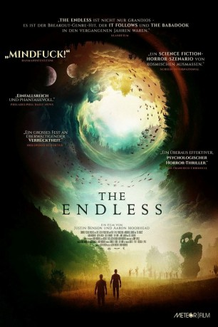

#9449 The Endless
 
 IMDB-Wertung: 6.5 / 10
IMDB-Wertung: 6.5 / 10  Metascore: 80
Metascore: 80 
Justin Smith und seinem jüngeren Bruder Aaron ist es vor mittlerweile 10 Jahren gelungen, einem religiösen Kult zu entkommen, in dem sie ursprünglich aufgewachsen sind. Eines Tages finden sie aber plötzlich ein Videoband in ihrer Post, das ihre Vergangenheit schlagartig zurückholt. Prompt machen sie sich auf den Weg in ihre alte Heimat im südkalifornischen Hinterland. Dort angekommen werden sie überraschend herzlich empfangen. Doch schon wenig später werden die Zeichen eindeutiger, dass an dem Ort einiges nicht stimmt. Die Zeit scheint an dem Ort spurlos vorübergegangen zu sein, denn keiner ist gealtert und die Natur macht auf seltsame Weise auf sich aufmerksam. Langsam kommen die beiden Brüder dem Grund auf die Spur, doch was sie dann erwartet, hätten selbst sie niemals für möglich gehalten…
Jahr: 2017
Dauer: 111 Minuten
FSK: 12
Land: USA Studio: Well Go USA EntertainmentTonspuren: DTS - ,
Untertitel: Deutsch,
Auflösung: 1080p (1920x808) Größe: 5724 MB
Genre: Thriller, Horror, Sci-Fi, Fantasy
Regisseur: Justin Benson, Aaron Moorhead
Drehbuch: Justin Benson
Soundtrack: Jimmy Lavalle
Darsteller:
- Aaron Moorhead als Aaron
- Justin Benson als Justin
 Callie Hernandez als Anna
Callie Hernandez als Anna Tate Ellington als Hal
Tate Ellington als Hal- Shane Brady als Shane
 Lew Temple als Tim
Lew Temple als Tim- Kira Powell als Lizzy
- David Lawson Jr. als Dave
 James Jordan als Shitty Carl
James Jordan als Shitty Carl- Emily Montague als Jennifer Danube
- Peter Cilella als Michael Danube
- Vinny Curran als Chris Daniels
 Ric Sarabia als Early 1900's Man
Ric Sarabia als Early 1900's Man- Greg Marcks als Cult Member (uncredited)
- Catherine Lawson als Exit Councelor
- Josh Higgins als Beer Distro Ted
- Billy Ray Brewton als Beer Distro Dale
- Glen Roberts als Woods
Datei: X:\2017(A-F)\Endless, The (2017, FSK12, 1920x808).mkv seit 03.09.2018
Festplatte: HD 2017(A-Z)-2018(A-F)
 Es gibt insgesamt 152 Filme in der Gruppe '2017(A-F)'
Es gibt insgesamt 152 Filme in der Gruppe '2017(A-F)'